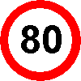
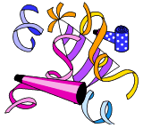

Klik hier om onze sponsor te bezoeken!
Rekenprobleempjes
|

|
De puzzels zijn gemarkeerd met sterren ( ) die de moeilijkheidsgraad van de betreffende puzzle aangeven.
) die de moeilijkheidsgraad van de betreffende puzzle aangeven.
![[TERUG]](left.gif) terug naar de hoofd-puzzelpagina.
terug naar de hoofd-puzzelpagina.

i.
Grote Getallen ![[Nieuw!]](nieuw.gif)
Gebruikmakend van de cijfers 1 tot en met 9 moeten twee getallen gemaakt worden.
Het produkt van deze twee getallen moet zo groot mogelijk zijn.
Alle cijfers moeten precies één keer voorkomen.
De Vraag:
Wat zijn de twee gevraagde getallen?
Het Antwoord:
 Klik hier!...
Klik hier!...
![[OMHOOG]](back.gif) terug naar de index
terug naar de index
ii.
Getal Gezocht
Er is een uniek getal waarvan het kwadraat en de derde macht samen
precies alle cijfers van 0 tot en met 9 precies éénmaal gebruiken.
De Vraag:
Welk getal is dit?
Het Antwoord:
Klik hier!...
terug naar de index
iii.
Roeien over de Rivier 
Patrick en Eric bevinden zich op tegenoverliggende oevers van een rivier.
Ze hebben allebei een roeiboot.
Ze vertrekken tegelijkertijd met hun roeiboot naar de overkant.
Hierbij passeren ze elkaar op 720 meter van de oever waarvan Patrick vertrok.
Bij het bereiken van de overkant rusten ze allebei even lang uit voordat ze terugkeren.
Op de terugweg passeren ze elkaar op 400 meter van de oever waarvan Patrick terugkeerde.
Patrick en Eric roeien heen en terug met constante snelheid, maar Eric roeit het snelst.
De Vraag:
Hoe breed is de rivier?
Het Antwoord:
Klik hier!...
terug naar de index
iv.
Sluipende Spin
Een rechthoekige kamer meet 7.5 meter in lengte en 3 meter in breedte.
De kamer heeft een hoogte van 3 meter.
Een spin zit 25 centimeter onder het plafond in het midden van een van de korte muren.
Een slapende vlieg zit 25 centimeter boven de grond in het midden van de tegenoverliggende muur.
De spin wil naar de vlieg lopen (d.w.z, alleen via de muren, vloer of plafond) om deze te vangen.
De Vraag:
Hoe kan de spin de vlieg bereiken, door slechts 10 meter te lopen?
Het Antwoord:
Klik hier!...
terug naar de index
v.
Bier en Bitterballen
Twee toeristen bezoeken op een mooie zomerdag de stad Gouda.
Tijdens hun rondwandeling door het centrum zien ze een gezellig terras.
Ze besluiten er wat te gaan drinken met een portie bitterballen erbij.
De ober vertelt hun dat de bitterballen besteld kunnen worden in porties van 6, 9 of 20.
De Vraag:
Wat is het grootste aantal bitterballen dat niet besteld kan worden met deze porties?
Het Antwoord:
Klik hier!...
terug naar de index

vi.
Snelle Sommen
Een zakenman rijdt van Amsterdam naar Den Haag.
De eerste helft van de afstand rijdt hij met een constante snelheid van 80 km per uur.
De tweede helft van de afstand rijdt hij met een constante snelheid van 120 km per uur.
De Vraag:
What is gemiddelde snelheid van de zakenman voor de gehele reis?
Een Hint:
Het antwoord is niet 100 km per uur!
Het Antwoord:
Klik hier!...
Nog een Vraag:
Een coureur van een raceauto reed, op een 4 km lang circuit, de eerste 2 km met
een gemiddelde snelheid van 120 km per uur.
Hoe hard moet hij de tweede 2 km rijden om een gemiddelde snelheid van 240 km per uur voor
het gehele circuit te halen?
Nog een Antwoord:
Klik hier!...
En nog een Vraag:
Makkum en Stavoren zijn twee dorpjes.
Michael en Donald willen van Makkum naar Stavoren gaan.
Ze vertrekken op hetzelfde tijdstip.
Michael gaat op de fiets. Donald gaat met de auto die zes keer
sneller is dan Michael op zijn fiets.
Helaas krijgt Donald pech met zijn auto, halverwege tussen Makkum en Stavoren.
Gelukkig geeft een passerende boer hem een lift naar Stavoren per tractor.
Maar de boer rijdt slechts half zo snel als Michael op zijn fiets.
Wie arriveert er als eerste in Stavoren?
En nog een Antwoord:
Klik hier!...
terug naar de index
vii.
Vogel en Verkeer
Op een weg rijden twee auto's naar elkaar toe; zij
bevinden zich op een afstand van 100 kilometer van elkaar. De linkse auto
rijdt met een snelheid van veertig kilometer per uur en de rechtse auto met
een snelheid van zestig kilometer per uur. Een vogel start op dezelfde plaats
als de rechtse auto en vliegt met een snelheid van tachtig kilometer per uur.
Als de vogel de linkse auto bereikt draait hij om van vliegrichting, en als hij weer bij de rechtse auto aankomt keert hij zijn vliegrichting weer om, enzovoorts.

De Vraag:
Wat is de totale afstand die de vogel heeft afgelegd op het moment dat de twee auto's bij elkaar zijn gekomen?
Het Antwoord:
Klik hier!...
terug naar de index
viii.
Kurk in het Kanaal
Er is een kanaal met een brug erover. Een zwemmer springt van de
brug af en zwemt 1 kilometer stroomopwaarts. Na die eerste kilometer komt hij
een kurk tegen. Vervolgens zwemt hij nog een half uur verder en draait zich dan
om, en zwemt terug. De zwemmer en de kurk komen tegelijk aan bij de brug, en
de zwemmer heeft met constante snelheid gezwommen.
De Vraag:
Hoe snel stroomt het water in het kanaal?
Het Antwoord:
Klik hier!...
terug naar de index
ix.
Vierkant en Vierhoek
Het oppervlak van het vierkant dat hieronder wordt
getoond is: 8 x 8 = 64. Het vierkant is in vier stukken geknipt: A, B, C, and D.
Deze stukken zijn vervolgens weer aan elkaar gelegd tot een nieuwe vierhoek die
tevens hieronder staat afgebeeld. De nieuwe vierhoek heeft echter een oppervlakte
van: 13 x 5 = 65.


De Vraag:
Hoe kun je het verschil in oppervlakte tussen het vierkant en de nieuwe vierhoek verklaren?
Het Antwoord:
Klik hier!...
terug naar de index

x.
Hiep Hiep Hoera!
In de klas van juf Melanie zitten zesentwintig kinderen.
Geen van de kinderen is geboren op 29 februari.
De Vraag:
Wat is de kans dat ten minste twee van de kinderen op dezelfde dag jarig zijn?
Het Antwoord:
Klik hier!...
terug naar de index
xi.
Wie Weet Waar Willem Woont?
Willem woont in een straat met huisnummers 8 tot en met 100.
Lisa wil weten op welk huisnummer Willem woont.
Ze vraagt hem: "Is je huisnummer groter dan 50?"
Willem geeft antwoord, maar liegt.
Daarop vraagt Lisa: "Is je huisnummer een veelvoud van 4?"
Willem geeft antwoord, maar liegt weer.
Dan vraagt Lisa: "Is je huisnummer een kwadraatgetal?"
Willem geeft antwoord naar waarheid.
Hierop zegt Lisa: "Ik weet je huisnummer, als je me nog vertelt of het eerste cijfer ervan een 3 is."
Willem geeft antwoord, maar nu weten we niet of hij liegt of de waarheid spreekt.
Lisa zegt vervolgens op welk huisnummer ze denkt dat Willem woont, maar dat is (natuurlijk) fout.
De Vraag:
Wat is Willems echte huisnummer?
Het Antwoord:
Klik hier!...
terug naar de index
xii.
De Prins en de Parels
Lang geleden wilde een jonge Chinese prins trouwen met de dochter van een Mandarijn.
De Mandarijn besloot de prins te testen.
Hij gaf de prins twee lege, porseleinen vazen, 100 witte parels, en 100 zwarte parels.
"Je moet alle parels in de vazen doen", zei hij tegen de prins.
"Daarna roep ik mijn dochter uit de kamer hiernaast. Zij zal een willekeurige
parel uit een van de twee vazen nemen. Als deze parel een zwarte is, mag je met
mijn dochter trouwen."
De Vraag:
Wat was de beste manier waarop de prins de parels over de vazen kon verdelen?
Het Antwoord:
Klik hier!...
Nog een Vraag:
Je hebt drie vazen:
een vaas die twee witte parels bevat, een vaas die een witte en een zwarte parel
bevat, en een vaas die twee zwarte parels bevat.
Uit één van deze vazen wordt een parel getrokken.
De parel blijkt wit te zijn. Wat is de kans dat de andere parel in dezelfde vaas
ook wit is?
Nog een Antwoord:
Klik hier!...
En nog een Vraag:
Je hebt nu tien vazen:
vijf van de vazen bevatten een witte parel en vier van de vazen bevatten een
zwarte parel (merk op dat een vaas dus ook zowel een witte als een zwarte parel kan bevatten!).
Je kiest willekeurig een van de vazen.
Wat is de kans dat de vaas die je kiest leeg is?
En nog een Antwoord:
Klik hier!...
terug naar de index
xiii.
Plussen & Minnen
Hieronder staat een vergelijking die nog niet
klopt. Door nu aan de linkerkant een aantal plussen
en minnen tussen de cijfers te zetten (zonder
hierbij de volgorde van de cijfers te veranderen)
kan de vergelijking wel kloppend gemaakt worden.
123456789 = 100
De Vraag:
Hoeveel verschillende manieren zijn er om de
vergelijking op deze wijze kloppend te maken?
Het Antwoord:
Klik hier!...
terug naar de index
xiv.
Missende Bladzijden
Uit een boek missen een aantal opeenvolgende bladzijden. De som van de nummers ervan is 9808.
De Vraag:
Welke bladzijden ontbreken?
Het Antwoord:
Klik hier!...
terug naar de index
xv.
Postbode Piet
Postbode Piet bezorgt de post in het dorpje Tienhuizen.
Dit dorpje bestaat, zoals de naam al doet vermoeden, uit één straat
met tien huizen, genummerd van 1 tot en met 10.
In een zekere week bezorgde Piet bij twee huizen in het dorpje geen
post; bij de overige huizen bezorgde hij elk drie maal de post.
Elke dag bezorgde hij de post bij precies vier huizen.
De optellingen van de huisnummers waar hij post voor had waren:
op maandag: 18
op dinsdag: 12
op woensdag: 23
op donderdag: 19
op vrijdag: 32
op zaterdag: 25
op zondag: werkt hij nooit
De Vraag:
Welke twee huizen moesten het die week zonder post stellen?
Het Antwoord:
Klik hier!...
terug naar de index
xvi.
Allemaal Appels
Op de markt verkopen mevrouw Jansen en mevrouw Klaassen appels.
Mevrouw Jansen verkoopt haar appels voor een halve euro per twee stuks. De
appels van mevrouw Klaassen zijn wat kleiner; zij verkoopt haar appels
voor een halve euro per drie stuks.
Op een zeker moment, als beide vrouwen nog over evenveel
appels beschikken, wordt mevrouw Klaassen weggeroepen. Ze vraagt haar
buurvrouw om zorg te dragen voor haar handel. Om het allemaal niet te
ingewikkeld te maken gooit mevrouw Jansen alle appels op een grote hoop om
ze vervolgens te verkopen voor één euro per vijf stuks.
Als mevrouw Klaassen aan het eind van de dag terugkomt, zijn alle appels verkocht. Maar bij
het verdelen van de opbrengst blijkt er 3,50 euro tekort te zijn.
De Vraag:
Stel dat ze het bedrag gelijk verdelen, hoeveel komt mevrouw Jansen dan tekort
aan deze deal?
Het Antwoord:
Klik hier!...
terug naar de index
xvii.
Kameel & Bananen
Aan de rand van een woestijn ligt een bananenplantage.
De eigenaar van de plantage heeft 3000 bananen geoogst. Hij wil deze
bananen per kameel naar de markt vervoeren door een stuk woestijn van 1000
kilometer lang. De eigenaar heeft slechts één kameel, die
maximaal 1000 bananen tegelijk kan dragen, en één banaan op
eet voor elke kilometer die hij aflegt.
De Vraag:
Wat is de grootste hoeveelheid bananen
die afgeleverd kan worden op de markt?
Het Antwoord:
Klik hier!...
terug naar de index
xviii.
Boeiende Boeken
Twee vrienden, Alex en Bob, gaan samen met hun zoons, Peter en Tim,
naar de boekwinkel. Ze kopen alle vier een aantal boeken; elk boek kost
een bedrag in hele euro's. Als ze buiten komen, merken ze op dat
elk van beide vaders 21 euro méér heeft besteed dan zijn
zoon. Bovendien betaalde elk van de vier per boek net zo veel
euro als het aantal boeken dat hij heeft gekocht. Het verschil tussen
het aantal boeken van Alex en Peter is vijf.
De Vraag:
Wie is de vader van Tim?
Het Antwoord:
Klik hier!...
terug naar de index

xix.
Vier Vliegen
Vier vliegen, twee mannetjes en twee vrouwtjes, met een
verwaarloosbare afmeting, zijn gepositioneerd op de hoeken van een vierkante
meter. Elke vlieg probeert het mannetje/vrouwtje dat hij/zij voor zich ziet
te bereiken. Hun beginsituatie is weergegeven in het plaatje. Omdat de
vliegen naar elkaar toe vliegen, zullen ze uiteindelijk samenkomen in het
midden van het vierkant.
De Vraag:
Wat is de afgelegde afstand
van een vlieg op het moment dat ze bij elkaar komen?
Het Antwoord:
Klik hier!...
terug naar de index

xx.
Briljante Breuk
Met de cijfers 0 t/m 9 kan je twee breuken vormen die bij elkaar opgeteld precies 1 zijn.
De Vraag:
Hoe moet dat?
Het Antwoord:
Klik hier!...
terug naar de index

xxi.
Ferme Fietser
Een fietser reed één
kilometer met wind in de rug in drie minuten en hij deed over de
terugweg, met tegenwind, één minuut meer.
De Vraag:
Als we er van uit gaan dat
hij steeds dezelfde kracht op de pedalen uitoefent, in hoeveel tijd
zou hij dan één kilometer afleggen als er geen wind was?
Het Antwoord:
Klik hier!...
terug naar de index
xxii.
Sappige Sinaasappels
Groenteboer W. Wortel wil zijn voorraad sinaasappels
eens netjes etaleren. Al doende merkt hij dat als hij ze achter elkaar
legt in groepjes van drie, er één
overblijft. Hetzelfde gebeurt als
hij het probeert met rijtjes van 5, 7 of 9 sinaasappels naast elkaar.
Pas als hij rijtjes van 11 maakt, past het precies.
De Vraag:
Hoeveel sinaasappels heeft de groenteboer minimaal?
Het Antwoord:
Klik hier!...
terug naar de index
xxiii.
Emmertje Water
Bereken het minimale oppervlak (aan de buitenzijde) van
een cilindervormige emmer die aan de bovenkant open is, en waarin 30 liter water
kan.
De Vraag:
Wat is dat minimale oppervlak?
Het Antwoord:
Klik hier!...
terug naar de index
xxiv.
Komkommertijd
Op een zonnige ochtend stalt een groenteboer 200 kilo komkommers in
kisten uit voor zijn winkeltje.
Op dat moment bestaan de komkommers voor 99% uit water.
Het wordt die dag heel heet, waardoor de komkommers een beetje uitdrogen.
De groenteboer verkoopt de hele dag geen enkele komkommer,
en aan het eind van de dag bestaan de komkommers nog maar voor 98% uit water.
De Vraag:
Hoeveel kilo komkommers heeft de groenteboer over aan het eind van de dag?
Het Antwoord:
Klik hier!...
terug naar de index
xxv.
Palindroom Puzzel
Een getal wordt een palindroom genoemd wanneer het gelijk is aan
datzelfde getal met alle cijfers in omgekeerde volgorde.
Bijvoorbeeld, 2772 is een palindroom.
We hebben iets curieus ontdekt. We namen het getal 461, draaiden de
cijfers om, wat resulteerde in het getal 164, en berekenden de som van
deze twee getallen:
461
164 +
-------
625
We herhaalden het proces van het omdraaien van de cijfers en
het berekenen van de som nog twee keer:
625
526 +
-------
1151
1511 +
-------
2662
Tot onze verrassing, was het resultaat 2662 ook een palindroom.
We besloten om te kijken of dit puur toeval was of niet.
Dus namen we nog een driecijferig getal, draaiden het om, hetgeen
een groter getal opleverde, en sommeerden de twee. Het
resultaat was geen palindroom.
We herhaalden het proces, hetgeen resulteerde in een ander
driecijferig getal dat nog steeds geen palindroom was.
We moesten het proces nog twee keer herhalen om uiteindelijk bij
een viercijferig getal uit te komen dat ook een palindroom was.
De Vraag:
Wat was het driecijferig getal waarmee we de tweede keer begonnen
zijn?
Het Antwoord:
Klik hier!...
terug naar de index
xxvi.
Rennen op de Roltrap
Je loopt omhoog op een roltrap met een snelheid van 1 trede per
seconde. Na 50 stappen ben je aan het eind. Je draait je om
en rent met een snelheid van 5 treden per seconde omlaag. Na
125 stappen ben je weer aan het begin van de roltrap.
De Vraag:
Hoeveel stappen heb je nodig als de roltrap stil staat?
Het Antwoord:
Klik hier!...
terug naar de index

Click Here to Visit our Sponsor
Copyright © 1996-2005. RJE-productions. All rights reserved.